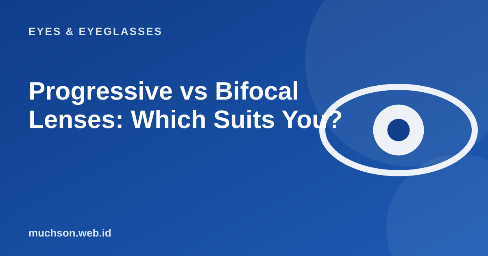

Home › Articles › Eyes & Eyeglasses
Eyes & EyeglassesProgressive vs Bifocal Lenses: Which Suits You?
After 40, many people switch between distance glasses and reading glasses. Progressive and bifocal lenses solve that in one pair, but they work and feel different to wear.

Different ways of working
Text description of the diagram
Bifocal
- Two zones: far and near
- A visible dividing line
- Focus changes feel like a "jump"
- No intermediate distance zone
- Cheaper
Progressive
- Power changes smoothly
- No line, looks like an ordinary lens
- Far, intermediate and near zones
- Needs an adjustment period
- More expensive
Why do progressives need adapting?
In progressive lenses, the side edges of the lens have a distortion that cannot be avoided, because the power changes from top to bottom. You have to learn to move your head, not just your eyes, to look sideways, and to lower your gaze to read. Adapting usually takes a few days to two weeks.
Which should you choose?
The key is the measurement
Progressives need careful measurement: pupil distance, lens height and frame fit. Choosing an experienced shop that offers consultation makes a big difference to comfort.
FAQ
Are progressives better than bifocals?
It is not a matter of better. Progressives are smoother and have no line, but need adapting and cost more. Bifocals are simpler.
Can I drive with progressive lenses?
Yes, once you are used to them. For the first few days, avoid long drives until you feel comfortable.
Do all frames suit progressives?
No. The frame needs enough lens height for the near zone. Ask the optical shop before choosing.